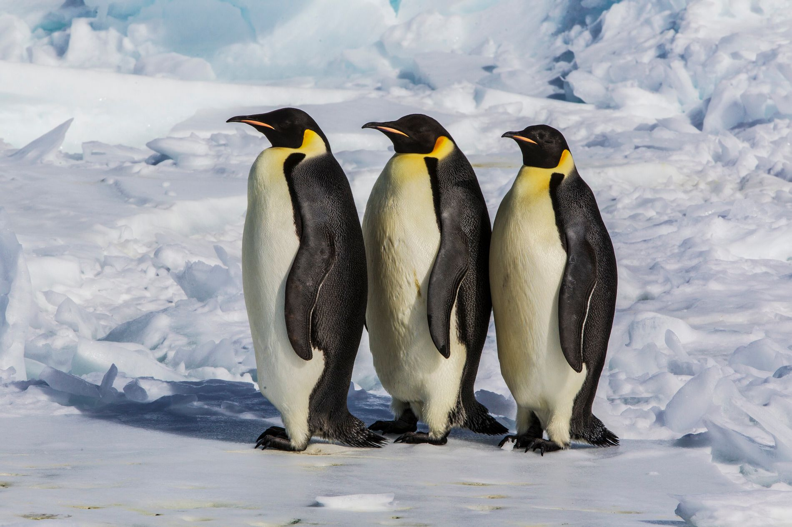
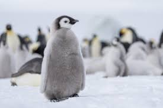
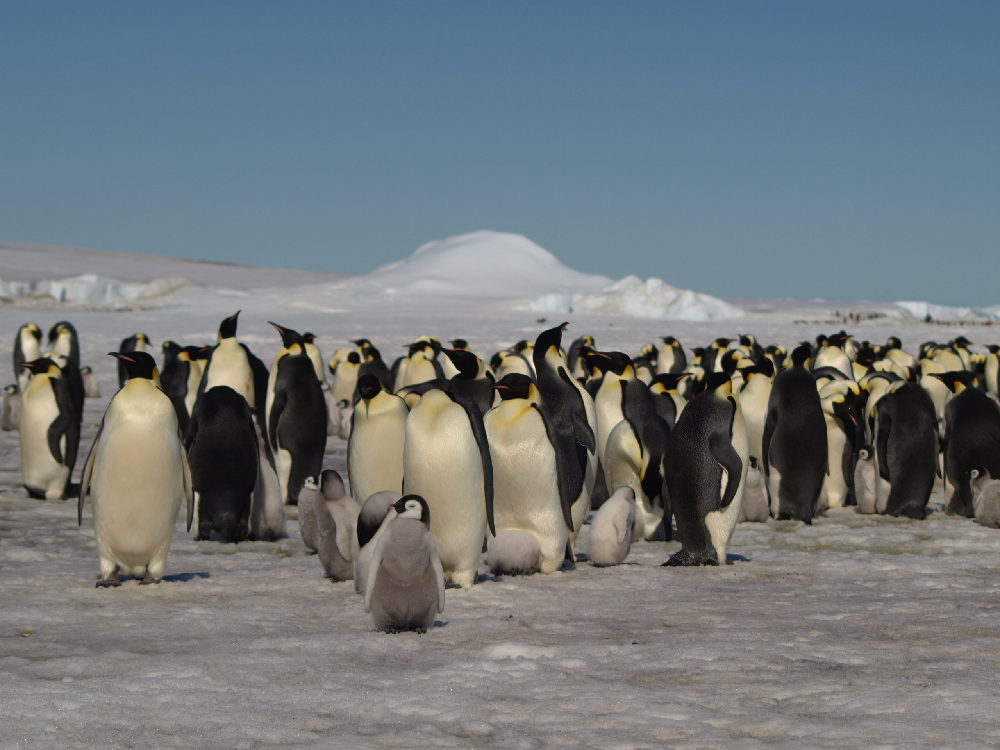

¿Que animal es el Pingüino Emperador?
Bienvenidos al mundo del gigante de la Antártida. Aquí descubrirás todo sobre el Pingüino Emperador: desde sus impresionantes habilidades de buceo hasta su increíble ciclo de vida en el rincón más frío del mundo. Explora la vida del rey del invierno

Siendo una de las instituciones mas grandes a nivel mundial sobre la flora y fauna del planeta National Geographic nos cuenta una narrativa visual y conductual de la especie, describiendo con detalle las épicas travesías que realizan estos pingüinos a través del desierto de hielo para asegurar la alimentación de sus crías.

National Geographic
British Antarctic Survey (BAS): Es una de las fuentes más fiables a nivel científico. Donde se pueden encontrar datos precisos sobre sus poblaciones, colonias detectadas por satélite y el impacto del cambio climático.

British Antarctic Survey
El Pingüino Emperador es el ave más emblemática de la Antártida, destacando por su gran tamaño y su asombrosa capacidad de adaptación al frío extremo. Durante el crudo invierno polar, estos animales forman densos grupos para conservar el calor corporal mientras los machos protegen cuidadosamente el único huevo de la pareja. Su dieta se basa principalmente en peces y krill, los cuales capturan realizando inmersiones a profundidades que superan los quinientos metros. Sin embargo, su ciclo de vida depende estrictamente de la estabilidad del hielo marino, elemento que hoy se encuentra amenazado por el cambio climático. Esta especie no solo es un símbolo de resistencia biológica, sino también un recordatorio de la fragilidad de los ecosistemas más remotos de la Tierra.